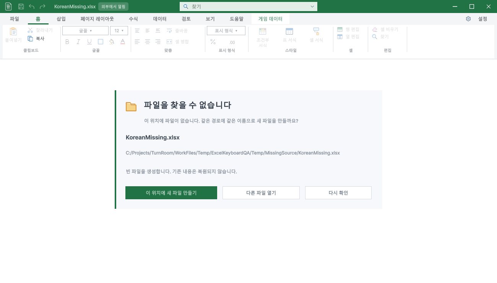

Tracefolio REPORTS & ISSUES
Tracefolio REPORTS & ISSUES누락 파일 안내·같은 경로 생성 — 최종 검증
완료안내 카드·같은 이름 생성·복구 우선 처리를 적용하고 프로젝트 내 이동/재열기의 창 연결까지 확인했습니다.
작업 결과
누락 원본을 예외 문자열 한 줄 대신 정돈된 안내 카드로 표시합니다. 사용자가 생성 버튼을 누르면 같은 경로·파일명으로 빈 XLSX/CSV를 만들고 즉시 엽니다. 실제 버튼 클릭과 생성 후 정상 시트 진입을 확인했습니다.
변경 내용
적용 내용
파일명·선택 복사 가능한 전체 경로·생성 질문·빈 파일 안내와 명확한 주 버튼을 추가했습니다. 미저장 복구본이 있으면 빈 파일 만들기 대신 복구 버튼을 표시합니다. 기존 편집 세션이 살아 있으면 새 빈 원본을 만드는 화면으로 바꾸지 않습니다. 기존 파일을 덮어쓰지 않는 동일 폴더 임시 생성→원자적 이동을 사용하며 부모 폴더도 생성합니다. XLSX와 CSV만 허용합니다. 누락 창 제목도 클래스명 대신 파일명입니다.9개 언어 문구를 추가하고 기존 Affinity 원본에서 내보낸 공통 컬러 아이콘을 재사용했습니다.

프로젝트 안에 생성한 파일은 가져오기 후 GUID를 현재 창에 연결합니다. 이름·위치 변경 뒤에도 같은 창이 원본을 따라가며 재열기 시 중복 창을 만들지 않습니다.
검증
실제 Unity6000.0.83f1에서 생성·한글 입력·저장·재열기·기존 파일 바이트 보존·복구본 보호15개 검사 통과. Windows API로 생성 버튼을 클릭하여 FromMissing.xlsx의 정확한 경로 생성과 Sheet1 진입 확인. FastTyping.xlsx에는 복구본이 있어 실제 복구 버튼으로 Data 시트와 미저장 상태를 복원했습니다.9개 언어 실제 창을 캡처해 검수했고850×600에서도 카드·경로·버튼이 표시됨을 확인했습니다.
최종 빌드 오류0, 기존 Templete XML 주석 경고8개. 실제 Unity 엔진16묶음3550단언·별도 단축키2100/표68단언 회귀 통과. 영향받은 가이드37개를 새로 촬영하고9개 언어를 갱신했습니다. 현재42개 가이드 이미지·소스 해시 검사 오류0,9개 가이드의 실제 브라우저 이미지 깨짐/넘침0입니다.
생성·보존 실제 검사 · 회귀 검사 · 문서 검증
추가 실제 검증: Assets의 새 폴더에서 생성→GUID 할당→AssetDatabase 이름 이동→창 경로·제목 갱신→재열기 시 동일 창1개 유지·오류 없음. 프로젝트 연결 확인. 최종 소스 반영 후 문서42개 이미지 검사 오류0 재확인. 이전 구현·QA 기록
남은 사항
생성은 빈 파일이며 삭제된 내용 자체를 복원하지 않습니다. 복구본이 있으면 먼저 복구하도록 보호합니다. 쓰기 권한이 없거나 같은 경로에 파일/폴더가 이미 있으면 오류를 알리고 덮어쓰지 않습니다. 폴더 열기 대화상자의 운영체제별 전 조합은 인증하지 않습니다.
중간 실패 근거 보존: 버튼의 Unity 고해상도 스킨 배경 덮임을 확인해 스타일 수정 후 재촬영. 보조 캡처 fixture 충돌과 지연 로딩 이미지 대기를 수정해 재QA했습니다. 숨겨진 창의 최소 크기 시도는 통과로 계산하지 않고 새 표시 창에서 재검증했습니다.
교훈 검토: 기존 전역의 실제 화면 검증·복구 보호·미실행 구분 규칙으로 처리할 수 있어 중복 전역 변경 없음. 프로젝트 TC와 캡처 근거에 상세를 보존했습니다.
작업 시간
- 제안 시간: 20~35분. 시작2026-10-31 14:10:30 KST.
- 실제로 완료된 시간: 최종 구현·필수 검증 24분 47초, 2026-10-31 14:35:17 KST. 공개 배포 확인 시간은 별도 기록합니다.
- XERJ: 사용 — WorkbookViewer Reload/error 검색과 상태 확인 후 현재 Reload·CheckSource·OnGUI·Recovery 소스를 대조했습니다.